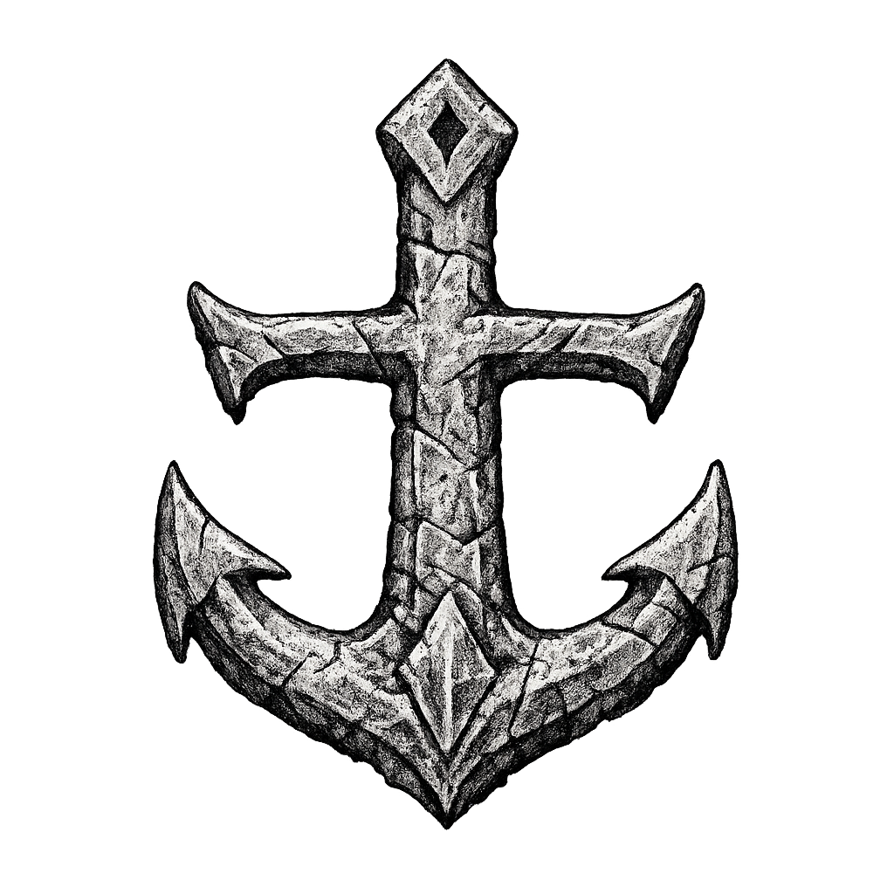
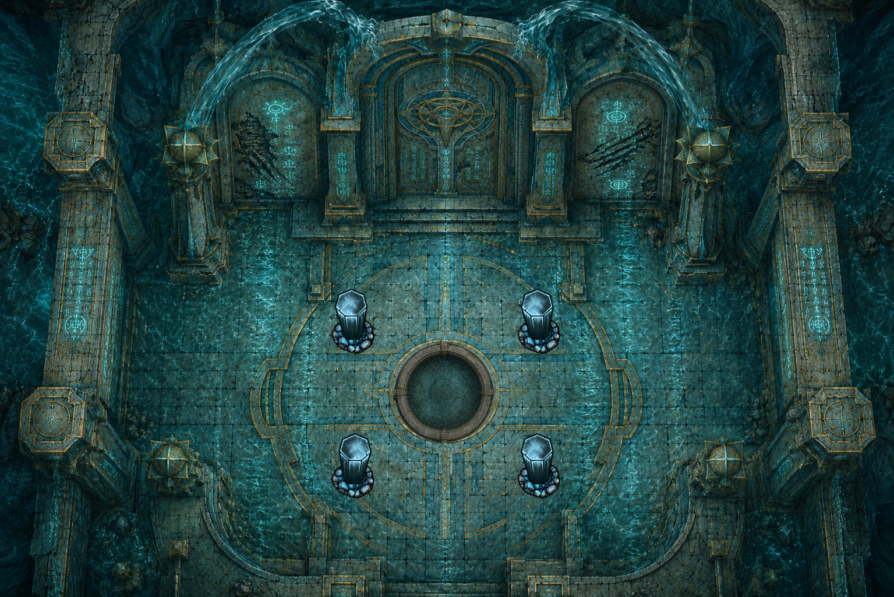

The runes do not sit still. Watch the sequence, hold it in memory, then answer the Marker in kind.
Inscription
“What the sea takes, it names first.
What is named, it carries.
What is carried, it returns.”
Rune Meanings
Status
Awaiting the trial.
Press BEGIN to open the ritual instructions.
The Marker is still.

◈Watch the runes when the trial begins.
ROUND COMPLETE
THE MARKER STIRS
THE SEA REJECTS THE ORDER
Trial Progress
Three remembered sequences. Each one grows longer and faster.
Round 0 of 3
Current Reply

THE WATER ANSWERS
The basin listens.
Sequence Console
Rotate each pillar rune and arrow. Create a closed clockwise current around the basin.
Attempts: 0
TLTRBRBL
Tip: click a rune to cycle its symbol. Click the arrow below it to rotate the flow direction.
Trial Structure
Round I, 3 runesRound II, 4 runesRound III, 5 runes
The sequence is shown first. Once it fades, repeat it exactly from five possible rune choices.
Recovered Impression
The Marker is cycling through something deliberate. It feels less like language than recall.
Trial Notes
A failed reply unleashes a tidal surge. Any creature within 15 feet must make a DC 12 Dexterity save or be knocked prone and pushed 10 feet.
Ritual Instructions
How the trial works
The Marker will show a short sequence of runes, one after another.
When the display ends, repeat that exact sequence using the five rune buttons below.
There are three rounds. Each round is longer, and the runes appear for less time.
A wrong reply triggers a sea-surge and resets the trial back to the first round.
Watch carefully. Remember the order. Answer the Marker exactly.
Sequence Instructions
How the Tidal Sequence works
Each pillar has a rune and a flow direction.
Click a rune to cycle its symbol. Click the arrow beneath it to rotate its direction.
The four arrows must form one closed clockwise current around the basin.
The runes must follow the old order: Flow → Echo → Depth → Stone.
Use CHECK ALIGNMENT to test the current arrangement. The chamber gives feedback after each attempt.
Let each stone speak to the next. Let no current end.
Marker Response
The Marker Sinks
The restored keystone settles into place. Pale blue runes flare once across the stone, then the Marker sinks slowly beneath the sea as the tide stabilises around it.
It was never broken. The piece was removed deliberately. On the inner face of the keystone, an etched sunburst marks Aurushi involvement.
The sea closes slowly over the stone. The runes dim. For a moment the water is perfectly still. Then far below… something shifts.
Sequence Response
The Chamber Opens
One by one, the pillars cease their grinding. Water pours upward instead of down, gathering above the basin in a perfect suspended ring.
The current completes itself. The central basin fills without source, then drains in a single spiralling breath.
Somewhere behind the northern arch, ancient stone unlocks. Whatever Maerys came here to witness lies beyond.